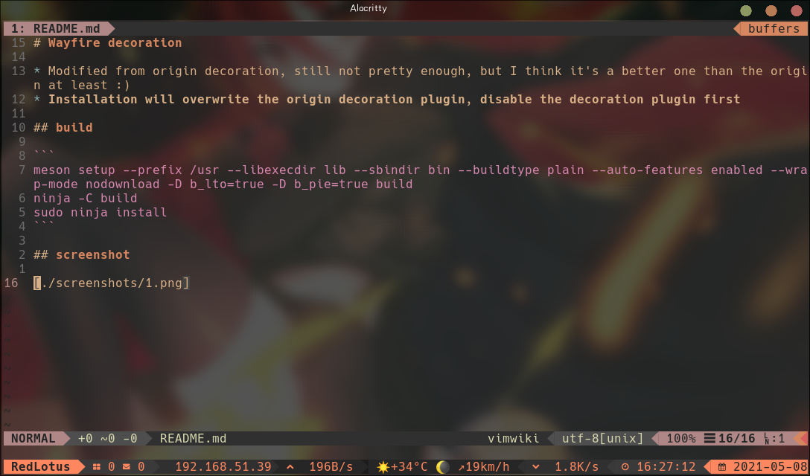

Wayfire decoration
- Modified from origin decoration, still not pretty enough, but I think it’s a better one than the origin at least :)
- Installation will overwrite the origin decoration plugin, disable the decoration plugin first
build
meson setup --prefix /usr --libexecdir lib --sbindir bin --buildtype plain --auto-features enabled --wrap-mode nodownload -D b_lto=true -D b_pie=true build
ninja -C build
sudo ninja install
screenshot
image